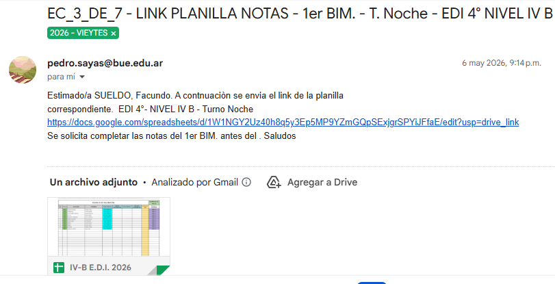
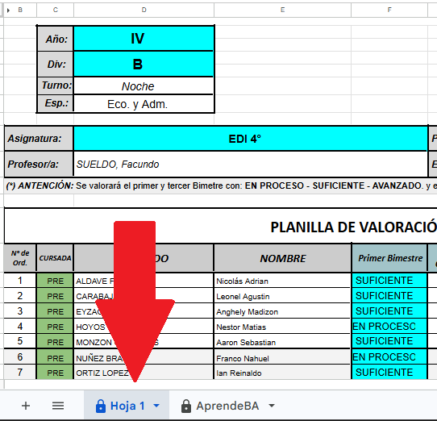
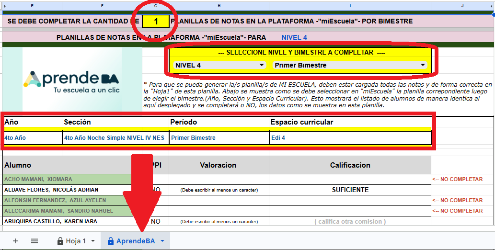
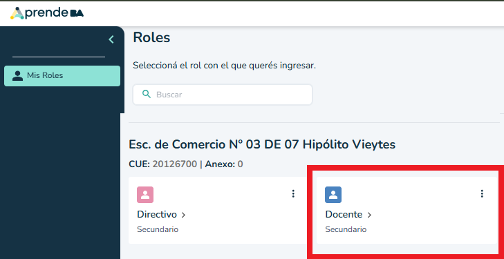
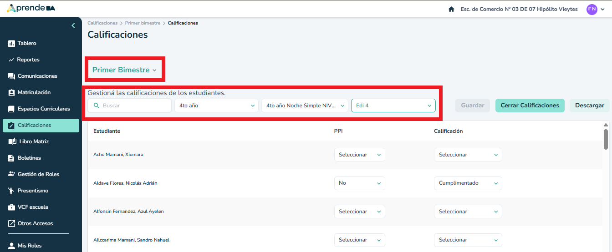

Abrir el enlace a la planilla enviado por correo electrónico.
Busque el asunto: LINK PLANILLA NOTAS

Completar las calificaciones en la pestaña "Hoja1" según corresponda al período del año.
ATENCIÓN: Lógica de carga según bimestre
Importante: Todos los alumnos deben estar cargados con nota para que se generen correctamente los datos en la hoja "Aprende BA" detallada en el siguiente paso.

En la hoja "Aprende BA" las notas aparecen automáticamente dependiendo del nivel y período seleccionado.
En la parte superior de la hoja visualizará la cantidad de planillas exactas que debe cargar en la plataforma oficial.

Uso de la herramienta:
La hoja "Aprende BA" de Drive es solo una guía visual para facilitarle la carga posterior.
El hecho de completar la hoja del Drive NO significa que la plataforma Aprende BA se cargue automáticamente. La carga final en el sistema es manual.
Para poder ingresar calificaciones, debe tener asignados los roles correctos en el sistema.
Al iniciar sesión, asegúrese de seleccionar el recuadro: Docente > Secundario.

Una vez dentro de la plataforma, diríjase al menú lateral izquierdo y haga clic en la sección Calificaciones (resaltada en verde).
Seleccione los filtros correspondientes para encontrar su curso:

IMPORTANTE:
Cargue exclusivamente las notas de los alumnos que figuran en su planilla de Drive.
No asigne notas a alumnos que no le correspondan. Utilice siempre la hoja "Aprende BA" de su Drive como referencia para evitar errores de cruce de datos.